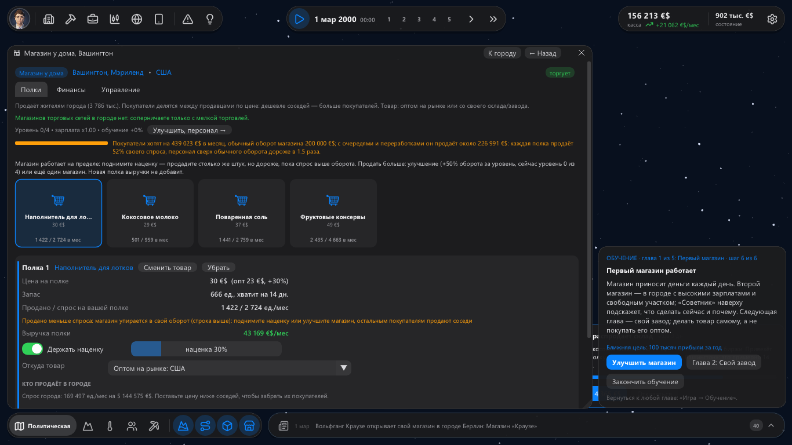
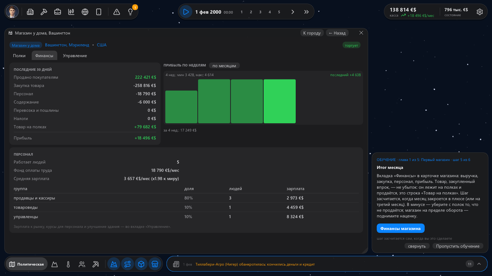
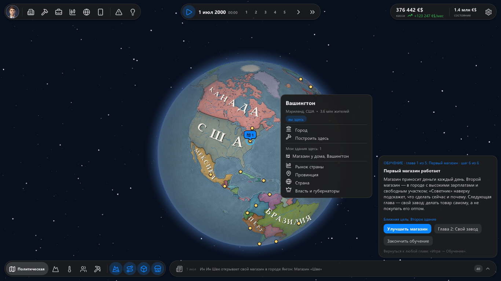

Мы посадили за игру «новичка» — человека, который в экономические стратегии не играл, — и смотрели, где он бросит.
Бросал он на девятой минуте: первый месяц магазина закрывался красным минусом, сверху сыпались карточки про войны
в чужих странах, а кнопка «пуск» запускала время со скоростью час в секунду. В 0.13 мы это починили.

Первые 15 минут
✚ Честный первый месяц. Товар, который магазин закупил впрок и который лежит на полках, — не убыток. В финансах
это строка «Товар на полках», и первый месяц теперь закрывается в плюсе там, где он и правда в плюсе.
✚ Пуск — это пуск. Кнопка ▶ и пробел продолжают на последней выбранной скорости (сначала «день в секунду»),
а не «час в секунду».
✚ Ближняя цель. «100 тысяч прибыли за год», «второе здание», «миллион в кассе» — видно в карточке «Я» и
на конце первой главы. Свой завод обучение предлагает, когда он вам по карману, а до этого — улучшить магазин.
✚ Один совет вместо двух. Обучение и советник больше не спорят о наценке.
✚ Меньше шума. Напряжённость, которая была в 2000 году, — не новость; смена власти, ультиматум или война
в далёкой стране не ставят игру на паузу и уходят в ленту.
Недельный ритм
✚ Итоги недели. У каждого здания прибыль по неделям: переключатель «по неделям / по месяцам» над графиком в
финансах, «/нед» в верхней панели — настоящая неделя.
✚ Мир живёт каждый день. Неурожаи, слухи о войне, санкции и революции приходят в разные дни месяца, а не
пачкой первого числа.
✚ Конкуренты отвечают быстрее. Сеть, у которой ваш магазин уводит покупателей, снижает цены уже через неделю.

Быстрое меню города
Клик по карте открывает меню города, как поселение в Mount & Blade 2: сам город, «Построить здесь», ваши здания
в нём с их бедами, рынок страны, провинция, страна и власть.

Сохранения 0.12 грузятся в 0.13.
Если вы пробовали игру и бросили — нам очень важно знать, на каком месте. Напишите в комментариях одной строкой.
И скажите, что вам интереснее: длинная песочница на поколения или партия на полчаса, где надо разорить конкурентов?